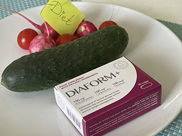

Sharon Stone legendás amerikai színésznő, forgatókönyvíró, producer és egykori modell, aki számos híres fotózáson szerepelt világszerte. Több mint nyolcvan filmben szerepelt. A leginkább azonban az Elemi ösztön című erotikus thrillerben játszott botrányos szerepe miatt emlékeznek rá, ahol nagyon pikáns jelenetekben szerepelt.
De vajon mibe került a hírnév a nemzetközi hírű színésznőnek? Sharon Stone borzalmas részleteket árult el a forgatásról, és megosztotta riportereinkkel személyes fájdalmát.

Kevesen tudják, hogy a hollywoodi színésznő évek óta magas vércukorszinttől szenved. És sajnos a pénz nem megoldás erre a problémára. Tévhit, hogy csak a túlsúlyos emberek szenvedhetnek ettől. De ez messze nem így van.
A megemelkedett glükózszint okai a következők lehetnek:
- a hasi zsírsejtek feleslege;
- magas vérnyomás;
- a petefészek működésének zavara (nőknél);
- egyéb endokrin rendellenességek;
- bizonyos készítmények szedése (beleértve a kombinált orális fogamzásgátlót);
- örökletes hajlam.
Senki, még a világ hírességei sem menekülhetnek ettől a rendelleneségtől. Abban az időben, amikor Sharonnak a femme fatale-t kellett játszania - a forgatáson a fizikai és mentális megterhelés, vaéamint a rendszertelen étkezési időbeosztás miatt - szörnyű rohamokat szenvedett el.
A producerek figyelmen kívül hagyták a színésznő általános állapotát, és nem állították le a forgatást, mert a filmet időben el kellett készíteni, ráadásul a leállás nagy pénzkiesést jelentett volna. Közben Sharon egyre rosszabbul lett. A színésznő rohamot kapott az inzulin hiánya miatt a szervezetében. Sharon nehezen kapott levegőt, és elmondása szerint majdnem öntudatlan állapotba került. A színésznőt kórházba szállították, és kiderült, hogy a szervezete kritikus állapotban van.
A színésznő egy idő után összeszedte magát, de nem épült fel teljesen. A fennmaradó forgatási műszakok számára "tönk széli" állapotában zajlottak. A forgatás végeztével Sharon idegösszeomlást kapott, és abbahagyta a szükséges diéta követését. Az eredmény depresszió és súlygyarapodás lett.
Egy idő után sikerült újra formába lendülnie, de a cukorproblémái megoldatlanok maradtak volna, ha nem történik egy sorsfordító találkozás Salma Hayekkel, aki hasonló problémákkal küzd. Salma megosztotta egy speciális svájci kutatóintézetbe tett sikeres útjának részleteit, ahol a tudósok egy egyedülálló készítményt találtak fel a cukorszint stabilizálására.
Sharon Stone Svájcba utazott. Találkozott Marko Stalder endokrinológus szakértővel, aki elárulta, hogy kutatócsoportjával több mint 20 éve dolgoznak egy egyedülálló készítmény kifejlesztésén.
A tudósok kifejlesztették a kapszulákat, amelyek a magas vércukorszintű embereket támogathatják a rendellenesség jeleinek visszafordításával és az inzulintermelés normalizálásával. Ez egy olyan támogató programeszköz, amelynek nincs párja a világon. Az összetevők egyedülálló kombinációja képes enyhíteni a cukorbetegség fő tüneteit, normalizálni a vérnyomást, erősíteni a szív- és érrendszert, csökkenteni a koleszterinszintet, megszüntetni az érgörcsöt és stabilizálni a szervezetet. A készítmény továbbá gyulladáscsökkentő tulajdonságokkal is rendelkezik.
Miután a színésznő egy helyreállító kúrán esett át a készítménnyel, diétával kombinálva, úgy kezdte érezni magát, mintha korábban soha nem szenvedett volna ilyen problémáktól. A magas cukorszint okozta kellemetlenségek és következmények megszűntek, és az energia visszatért. A színésznő felépült, és újult erővel repült vissza az Egyesült Államokba, hogy egy új projektben szerepeljen. Jelenleg azt mondja, hogy szinte észre sem veszi a magas vércukorszint megnyilvánulásait.
Szerkesztőségünket érdekelte a svájci tudósok egyedülálló felfedezése, és szakértőket kértünk fel, hogy nyilatkozzanak a kapszula hatásairól.

A teljes automatizálás kora kényelmesebbé és egyszerűbbé tette az emberek életét. De milyen árat fizetünk a civilizáció előnyeiért? A mozgásszegény életmód és a túlevés nem csak súlygyarapodáshoz vezetett. A modernitás igazi csapása a kritikus vércukorszint lett. Azonban a tudósok kifejlesztettek egy teljesen innovatív készítményt, a kapszulát, amelyet ajánlok mindenkinek, akinek cukorbetegséggel kapcsolatos problémái vannak. A titok az olíva levél kivonat és az L-arginin egyedülálló összetételében rejlik.
- Olíva levél kivonat — segít csökkenteni a vércukorszintet és serkenti az inzulintermelést, amely képes elpusztítani a vérrendszerben lévő felesleges glükózt.
- L-arginin — az L-arginin egy olyan aminosav, amely képes normalizálni a fehérjeszintézist, tágítani az ereket és javítani a szövetek táplálását. Fenntarthatja a vér normál koleszterinszintjét és növelheti a sejtek inzulinérzékenységét.
- Króm — az egyik legfontosabb mikrotápanyag a 2-es típusú cukorbetegség terápiájában, mivel fokozza az inzulin hatását és "glükóztolerancia-tényezőként" működik.
- Resveratrol - stabilizálja a vércukorszintet és véd a cukorszint hirtelen kiugrásai ellen. Gátolhatja a sejtek inzulinrezisztenciáját és megvédheti őket a krónikus károsodástól.
Egészséges embereknél a vércukorszintet az inzulin hormon szabályozza, amelyet a hasnyálmirigy a táplálékfelvétel hatására automatikusan termel. Magas cukorszint esetén ez a folyamat felborul.
Ha a szervezetben az inzulintermelés nem megfelelő vagy teljesen leáll, akkor ez a súlyos rendellenesség alakul ki. Ez a probléma már gyermekkorban és fiatal felnőttkorban jelentkezhet, ami magának a hasnyálmirigynek a károsodásából adódik. Nemrégiben azonban kifejlesztettek egy egyedülálló készítményt, a nevű terméket, amely segíthet működésének normalizálásában.
A termékkel együtt végzett helyreállító kúrával jelentősen javíthatja közérzetét, egyszerűsítheti szigorú diétáját, és megszabadulhat a magas cukorszint jeleitől.
- normalizálni az inzulinérzékenységet
- javítani a lipidanyagcserét
- erősíteni az ereket, ellenállóbbá és rugalmasabbá tenni őket
- telíteni a szervezetet hasznos elemekkel
- javítani a szívizom működését
- eltávolítani a toxinokat a vérből.
A szakértői ajánlás után újságíróink felvették a kapcsolatot a gyártóval, hogy megtudjuk, hogyan rendelhető a . Kiderült, hogy a "gyógyszertári láncok" hibájából még mindig nem kapható nyilvánosan a mi piacunkon. A monopolisták, a gyógyszertárlánc-tulajdonosok nem profitálnak az ilyen eredményt produkáló termékekből, hiszen a cukorszint normalizálására és az emberi állapot javítására egy egész termékcsalád kapható. És ez milliárdos forgalmat jelent. A értékesítését egyszerűen blokkolják korrupt kapcsolataikon keresztül. Az utolsó tétel maradt a gyártó raktárában, és csak -ig (bezárólag) vásárolható meg. Siessen és rendelje meg, amíg van rá lehetőség.
Köszönöm ezt a készítményt! Ez valami hihetetlen. Pedig annyi mindent kipróbáltam, de csak a segített.
A segítségével sikerült stabilizálnom a vércukorszintemet. A legfontosabb, hogy ne felejtsék el betartani a diétát.

Ez egy csoda! Annyit szenvedtem ezzel a problémával, hogy érrendszeri szövődményt okozott. A nemcsak a tünetek megszüntetésében segített, hanem javította az általános egészségi állapotomat is.
Most már csak az van hátra, hogy lekapcsolják a gyógyszertári banditákat, akik megakadályozzák a termékhez való hozzáférést a piacon.
Ki gondolta volna! Sharon Stone a szépség ideálja, és egy ilyen probléma.
Nekem a lányom rendelte meg a terméket. A magas cukorszint miatt annyi bajom volt a lábammal, hogy a lábujjaim szó szerint rohadni kezdtek. Ez a készítmény szó szerint megmentett.
Mindig is tetszett Sharon Stone. Egy ilyen probléma ellenére is elképesztően jól néz ki, most már tudom, mi a titka.
Olvastam az összetételt, még sosem láttam ilyen jó komplexumot. Mindenképpen megrendelem!
Anyukámnak vettem a -t, szörnyű rohamai voltak. Tehát anyukámnak sikerült elfelejtenie a magas cukorral kapcsolatos következményeket.
A -nak mindenki számára elérhetőnek kell lennie! A monopolisták nem vehetik el tőlünk a jogot, hogy igazán jó készítményeket rendelhessünk.
Szegény Sharon Stone! Magam is első kézből ismerem ezt a problémát és az inzulinhiány miatti eszméletvesztést. Ha ez segített neki, akkor én is rendelek egyet magamnak.
Sharon Stone egy szex szimbólum számomra. Nem tudtam, hogy ilyen rohamai voltak a kedvenc filmem forgatása során. Egészséget neki!
Többszörösen telítetlen savakat és kannabiszolajat tartalmaz! Életmentő a magas vércukorszintű emberek számára, olvassanak a gyógyító tulajdonságaikról. Mindenképpen megrendelem.
A családunk számára a egy életmentő. Úgy alakult, hogy se nekem, se a férjemnek nem jó a cukra. Egymás után végeztük el a kúrát Az állapotunk javult, a cukorszintünk nem emelkedett tovább, és most már mindenkinek ajánljuk, akit ismerünk.

A terméknek köszönhetően egy csomó pénzt spórolok. Kevesebbet költök injekciókra és egyéb készítményekre. De ne felejtsük el, hogy az étrend és a helyes hozzáállás nagyon fontos.